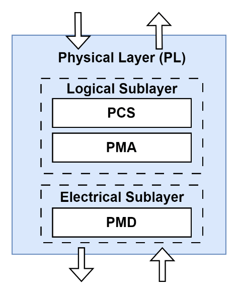
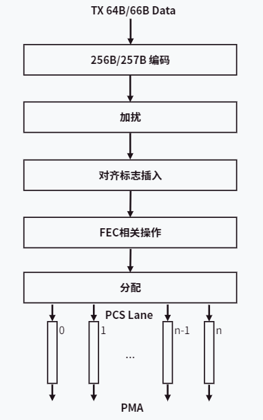
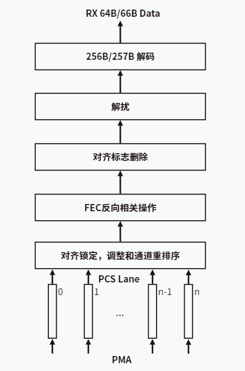
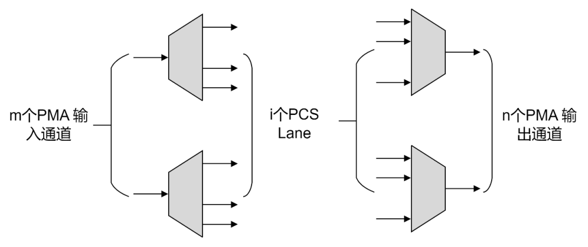
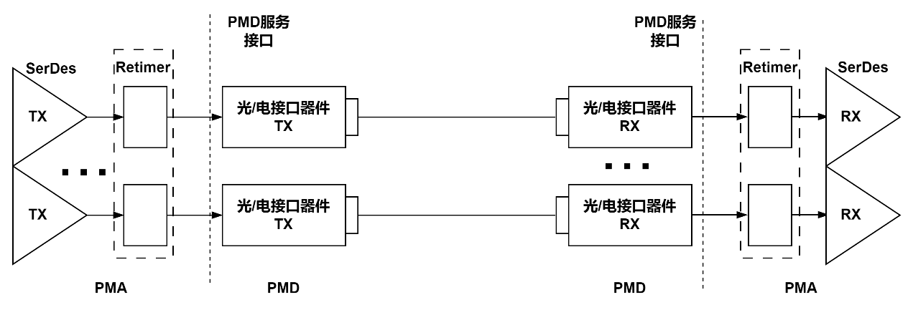
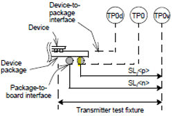
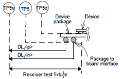
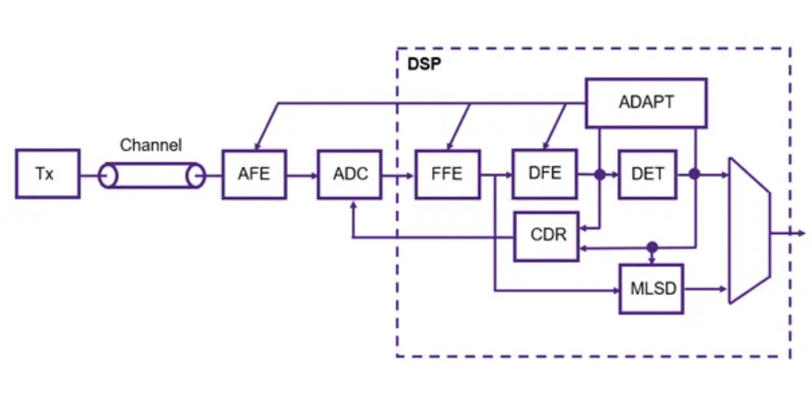

物理层与电气接口 ¶
本章介绍 Scale-Up 域的物理层基础。为了降低阅读门槛，前半部分先建立 Lane、SerDes、OIF-CEI 等基本概念，再进入 PCS、PMA、PMD 的物理层分层结构，以及信号速率、接口类型、系统损耗、误码率、一致性和驱动能力等关键要求；后半部分再补充这些物理层能力与 CEI、交换芯片和 Scale-Up 演进之间的关系。
物理层基础 ¶
物理层主要负责接收来自数据链路层的数据帧，对数据帧进行编码，并根据传输速率、调制方式及介质类型等参数，将数据转换为电信号或光信号在相应介质上传输；反之，接收来自介质的电信号或光信号，依据相同参数将其解码，并还原为数据帧上交至数据链路层。
物理层单端口速率可支持 50Gb/s、100Gb/s、200Gb/s、400Gb/s、800Gb/s 和 1.6Tb/s。物理子层通常根据需要支持 25Gb/s、56Gb/s、112Gb/s 或 224Gb/s 等高速率 SerDes，并适配铜缆、背板、光纤等多种介质类型
基础单元：Lane 与 SerDes ¶
当前高速数字信号通信普遍采用串行通信技术。其基础物理单元是 Lane，一个 Lane 通常由两对差分信号线组成：一对用于发送（TxRxPCIe、NVLink 还是高速以太网，都是通过将多个 Lane 聚合（bonding）来获得更高总带宽
芯片内部的数据通常是并行的，例如 64 位或 128 位总线；为了在 Lane 上进行高速串行传输，需要一种专门电路负责并行数据与串行信号之间的转换，这就是 SerDes（Serializer/Deserializer，串行器 / 解串器SerDes 将芯片内部的并行数据转换为高速串行信号发送出去，并在接收端将串行信号转换回并行数据。单条 Lane 的传输速率直接受 SerDes 能力和传输介质物理特性的限制。
从读者理解角度，可以先把这里记成一句话：Lane 是最小传输通道，SerDes 是把芯片内部并行世界接到高速串行世界的关键接口电路。
标准接口：OIF-CEI 规范 ¶
为了确保不同厂商设备间的互联互通，光互联论坛（OIF）制定了通用电气接口（CEI）规范，对电气接口的物理形态、电压、频率以及信号调制方式等进行了标准化。CEI-56G、CEI-112G、CEI-224G 等规范定义了单通道（per-lane）在 56Gbps、112Gbps、224Gbps 速率下的接口标准，其中广泛使用 PAM4（4-Level Pulse Amplitude Modulation）等调制方式来提升数据速率。这些规范被 PCIe、CXL、NVLink 和以太网等主流互联协议广泛采纳或参考，作为其物理层设计基础
| 规范系列 | 发布年份（约） | 单通道速率（Gbps） | 调制方式 | 典型应用 / 参考协议 |
|---|---|---|---|---|
CEI-28G |
~2011 |
28 |
NRZ |
100G 以太网（4x25GPCIe 4.0/5.0、IB EDR |
CEI-56G |
~2017 |
56 |
PAM4 |
200G/400G 以太网、PCIe 6.0、NVLink 4.0 |
CEI-112G |
~2022 |
112 |
PAM4 |
800G 以太网、CXL 3.0、下一代 NVLink |
CEI-224G |
- |
224 |
PAM4 |
1.6T/3.2T 以太网、未来高速互联 |
注：NRZ 每符号传输 1 bit 数据，PAM4 每符号传输 2 bit 数据，在相同波特率下可实现双倍数据速率。
OIF-CEI 规范通常 5-6 年更新一代，每次发布新版本时速率大致翻倍。但需要注意，规范正式定稿往往晚于产业讨论与预研实现，因此不能机械地以规范发布时间推断相关产品的实际面世节奏。
常见端口速率及其对应的 Lane 数、FEC 模式、调制方式和单 Lane 速率关系如下：
| Port Speed | Physical Lanes | FEC Mode | Signaling Mode | SerDes Lane Bit Rate |
|---|---|---|---|---|
1.6Tb/s |
8 |
RS(544,514) / RS(272,257) |
106.25GBd PAM4 / 112GBd PAM4 |
212.5Gb/s / 224Gb/s |
800Gb/s |
4 |
RS(544,514) / RS(272,257) |
106.25GBd PAM4 / 112GBd PAM4 |
212.5Gb/s / 224Gb/s |
800Gb/s |
8 |
RS(544,514) / RS(272,257) |
53.125GBd PAM4 / 56GBd PAM4 |
106.25Gb/s / 112Gb/s |
400Gb/s |
2 |
RS(544,514) / RS(272,257) |
106.25GBd PAM4 / 112GBd PAM4 |
212.5Gb/s / 224Gb/s |
400Gb/s |
4 |
RS(544,514) / RS(272,257) |
53.125GBd PAM4 / 56GBd PAM4 |
106.25Gb/s / 112Gb/s |
200Gb/s |
1 |
RS(544,514) / RS(272,257) |
106.25GBd PAM4 / 112GBd PAM4 |
212.5Gb/s / 224Gb/s |
200Gb/s |
2 |
RS(544,514) / RS(272,257) |
53.125GBd PAM4 / 56GBd PAM4 |
106.25Gb/s / 112Gb/s |
200Gb/s |
4 |
RS(544,514) / RS(272,257) |
26.5625GBd PAM4 / 28GBd PAM4 |
53.125Gb/s / 56Gb/s |
100Gb/s |
1 |
RS(544,514) / RS(272,257) |
53.125GBd PAM4 / 56GBd PAM4 |
106.25Gb/s / 112Gb/s |
100Gb/s |
2 |
RS(544,514) / RS(272,257) |
26.5625GBd PAM4 / 28GBd PAM4 |
53.125Gb/s / 56Gb/s |
100Gb/s |
4 |
RS(528,514) / RS(272,257) |
13.28125GBd PAM4 / 14GBd PAM4 |
26.5625Gb/s / 28Gb/s |
50Gb/s |
1 |
RS(544,514) / RS(272,257) |
26.5625GBd PAM4 / 28GBd PAM4 |
53.125Gb/s / 56Gb/s |
50Gb/s |
2 |
RS(528,514) / RS(272,257) |
13.28125GBd PAM4 / 14GBd PAM4 |
26.5625Gb/s / 28Gb/s |
物理层架构 ¶
物理层包含逻辑子层和电气子层，其中逻辑子层包含 PCS（Physical Coding Sublayer）和 PMA（Physical Medium AttachmentPMD（Physical Medium Dependent

图 1-1 物理层结构。
PCS 主要完成数据的编码与解码，并进行错误检测与纠正，确保物理层数据传输的完整性与可靠性；PMA 负责数据的串行化与并行化转换，集成 SerDes、发送 / 接收缓冲、时钟发生与时钟恢复电路等功能；PMD 则将 PMA 处理后的数据流转换为适配特定物理介质的传输信号，实现物理层与介质之间的正确连接与可靠通信。
物理编码子层PCS ¶
PCS 层可使用多种编码方式。以 64B/66B 输入且 256B/257B 编码为例，发送方向与接收方向的主要流程如下：


图 1-2、图 1-3 分别给出 PCS 在发送方向和接收方向的处理流程。
发送方向主要包括：
- 输入
64B/66B数据进行256B/257B编码。 - 使用自同步扰码器对有效载荷添加扰码。
- 周期性生成并插入对齐标志，支持
PCS通道上的偏移去除和重新排序。 - 进行
FEC分发和FEC编码。 - 对
FEC编码后的数据按照轮循交错方式依次分发到各PCS lane。
接收方向主要包括：
- 锁定对齐标志并调整不同通道上的顺序。
- 执行
FEC解码和FEC合并。 - 删除对齐标志并完成解扰。
- 进行
256B/257B解码。
物理媒介适配层PMA ¶
PMA 负责数据的串行化和解串行化，以及发送时钟生成和接收时钟恢复；通过 PMA 服务接口在 PCS 与 PMA 之间映射发送和接收数据流，并在 PMA 与 PMD 之间通过 PMD 服务接口发送和接收数据流。
在发送方向上，PMA 将来自 FEC 的信号调整为 PAM4 或 NRZ 编码信号，并将 PCS 层传递的并行数据通过 SerDes 转换为串行数据流；在接收方向上，PMA 将来自 PMD 的编码信号恢复为 FEC 处理所需的数据流，并完成时钟恢复与数据同步。

图 1-4 在 Tx 和 Rx 方向上使用的 PMA 比特复用操作。
PMA 中还包含比特复用功能，可将 PCS lane 从 m 个 PMA 输入通道解复用，并重新复用到 n 个 PMA 输出通道上；具有 m 个输入通道和 n 个输出通道的 PMA 应以输入通道速率的 m/n 倍对输出通道进行时钟控制，并通过 PLL 倍频 / 分频电路生成输出时钟。
物理介质关联层PMD ¶
PMD 负责将数据转换为满足不同介质（铜缆或光纤）传输要求的电或光信号及所需信号强度。在铜缆通信中，PMD 包含数模转换器与模数转换器；在光纤通信中，PMD 包含光电转换器与电光转换器。

图 1-5 单纤单向发送和接收路示意图。
物理高速接口能力主要包括信号速率、接口类型、系统损耗要求、误码率、标准一致性和驱动能力等。
信号速率 ¶
标准速率在单通道下通常需要支持如下参考信号速率：
| 参考信号速率 | 编码方式 |
|---|---|
28Gb/s、26.5625Gb/s |
NRZ |
56Gb/s、53.125Gb/s |
PAM4 |
112Gb/s、106.25Gb/s |
PAM4 |
224Gb/s、212.5Gb/s |
PAM4 |
接口类型 ¶
常见的接口速率和类型如下，其中224Gb/s / 212.5Gb/s对应接口类型和 1.6T 相关类型仍在持续完善中：
| 接口速率 | 类型 |
|---|---|
50GBASE-R Family |
50GBASE-CR、50GBASE-KR、50GBASE-SR |
100GBASE-R Family |
100GBASE-CR2、100GBASE-CR4、100GBASE-DR、100GBASE-KP4、100GBASE-KR2、100GBASE-KR4、100GBASE-SR2、100GBASE-SR4 |
200GBASE-R Family |
200GBASE-KR1/CR1/DR1、200GBASE-KR2/CR2/SR2、200GBASE-KR4/CR4/SR4/DR4、200GBASE-KR8/CR8/SR8/DR8 |
400GBASE-R Family |
400GBASE-KR2/CR2/DR2、400GBASE-KR4/CR4/SR4/DR4、400GBASE-KR8/CR8/SR8 |
800GBASE-R Family |
800GBASE-KR4/CR4/SR4/DR4、800GBASE-KR8/CR8/SR8/DR8 |
1.6TBASE-R Family |
1.6TBASE-KR8、1.6TBASE-CR8、1.6TBASE-DR8 |
系统损耗要求 ¶
参考 IEEE 规范，TP0 到 TP5 的通道损耗要求如下：
| 信号速率 | TP0 到 TP5 损耗 |
|---|---|
28Gb/s、26.5625Gb/s |
35dB @ 14GHz / 13.28125GHz |
56Gb/s、53.125Gb/s |
30dB @ 14GHz / 13.28125GHz |
112Gb/s、106.25Gb/s |
28.5dB @ 28GHz / 26.5625GHz |
224Gb/s、212.5Gb/s |
40dB @ 53.125GHz / OIF 224G 未正式发布 |
误码率 ¶
考虑到 FEC 在链路中的纠错功能，信号进入 FEC 之前的误码率通常需要保持在最大 1E-6，码型为 PRBS31(Q)；在 Tj = 75 度条件下测试时，其他链路需保持正常开启。
标准一致性 ¶
原文在这一节分别给出了发送端与接收端的一致性要求引用关系：
50GBASE-CR、100GBASE-CR2、200GBASE-CR4的发送端规范参考相应TP2表项。50GBASE-KR、100GBASE-KR2、200GBASE-KR4的发送端规范参考相应TP0a表项。200GBASE-xR2、400GBASE-xR4、800GBASE-xR8的发送端在TP0v点一致性要求参考IEEE 802.3ck。200GBASE-xR1、400GBASE-xR2、800GBASE-xR4和1.6TBASE-xR8的接收端在TP5v点一致性要求参考IEEE 802.3dj。


图 1-6、图 1-7 给出发送端 TP0v 与接收端 TP5v 的测试点示意图。原文中这一部分重点是说明一致性验证依赖标准测试位置和对应表项，而不是仅凭接口名义速率判断链路能力。
驱动能力 ¶
根据不同信号速率，SerDes 需要具备不同的驱动能力以及对串扰、反射干扰的不敏锐性。这里支持的损耗是从 Bump 到 Bump 之间的通道计算，并在参考 IEEE TP0 到 TP5 通道损耗要求基础上叠加封装损耗和额外余量后，仍需满足 BER <= 1e-6。
| 信号速率 | 基频频点 | TP0-TP5 / 双边 PKG 损耗 |
BER < 1e-6 时需支持的 Bump-to-Bump 损耗 |
|---|---|---|---|
28Gb/s、26.5625Gb/s |
14GHz、13.28125GHz |
35dB / 5dB |
42dB |
56Gb/s、53.125Gb/s |
14GHz、13.28125GHz |
30dB / 5dB |
37dB |
112Gb/s、106.25Gb/s |
28GHz、26.5625GHz |
28.5dB / 10dB |
40.5dB |
224Gb/s、212.5Gb/s |
56GHz、53.125GHz |
40dB(包含双边PKG)未正式发布 |
40dB(OIF 224G) 未正式发布 |
关键技术 ¶
ADC + DSP 架构 ¶
在高速 SerDes 架构中ADC（模数转换器）+ DSP（数字信号处理器）架构与传统模拟混合信号（AMS）架构之间的选择，是当前高速互连设计中的核心权衡。原文给出的重点判断是：ADC + DSP 架构因其链路预算和工艺可扩展性优势，已成为速率超过 112Gbps 应用的主流选择。
其主要优势包括：
- 链路预算高、纠错能力强，适合高损耗和严重串扰信道。
- 工艺扩展性好，更容易随先进工艺节点演进获得能效和面积收益。
- 均衡能力强、灵活性高，便于支持更多抽头和多种调制方式。
- 对
PVT变化不敏感，设计可重复性和可移植性更好。

图 1-8 ADC + DSP示意图。
224G 技术 ¶
224Gbps 速率是 SerDes 技术发展中的重要里程碑。它不是将 112Gbps 架构简单翻倍，而是需要从芯片工艺到系统互连各环节协同升级。原文重点提到以下几个方面：
- 调制方式仍以
PAM4为主，通过降低符号率来减轻信道损耗。 - 需要更长的
FFE/DFE和更强的数字均衡能力。 - 在极端高损耗信道中，
MLSD等更复杂检测技术会成为稳定链路的重要补充。 - 接收端需要更高性能的
ADC，同时依赖更先进的工艺节点来控制功耗和面积。
封装形态与插损匹配 ¶
CoWoS / InFO / Foveros等先进封装可以缩短信道、降低插损，便于更高速率的D2D/C2C互联。- 插损预算需要端到端分摊到封装、走线、连接器和线缆，且要预留均衡余量。
- 在更长距离或更高带宽场景中，引入光接口可以减轻信号完整性与功耗压力。
从 28G 到 224G，每一代速率翻倍都会显著抬升信号完整性设计难度。封装、走线、连接器与冷却需要协同设计，关键测试指标包括眼图、抖动、BER 和链路训练收敛时间
物理层的生态落地 ¶
前文讲的是 PCS/PMA/PMD、SerDes、CEI 这些物理层基础；真正到了产业落地，问题就会变成另一种形态：同样基于 CEI 代际演进，不同协议、不同交换芯片和不同系统对象，究竟如何把这些物理能力组织成现实产品。 从这个角度看，物理层并不是孤立存在的，它一端连接协议语义，另一端连接交换芯片与整机形态，最终决定的是超节点里“谁来承载带宽、在哪个半径内交换、以什么代价扩展”。
PCIe、NVLink 以及数据中心以太网交换芯片，虽然面向的系统对象并不相同，但它们在物理层上都高度依赖 OIF-CEI 的速率窗口与 SerDes 能力：
PCIe：PCIe 5.0的32 GT/s速率在电气特性上接近OIF CEI-28G时代能力边界；到了PCIe 6.0，其64 GT/s速率引入PAM4调制，设计原则已更接近CEI-56G系列。NVLink：NVIDIA H100所使用的第四代NVLink，单Lane单向速率约为100 Gbps（PAM4调制， 50 Gbaud） ，其电气能力与CEI-56G-PAM4所代表的这一代高速接口能力高度相关。未来版本也预计会继续跟进更高速率的CEI-112G/224G路线。- 以太网交换芯片：其代际演进几乎可以直接映射到
CEI-28G → 56G → 112G → 224G的电气代际跃迁，区别主要不在物理层原理，而在交换容量、端口形态和组网目标。
也正因为如此，OIF-CEI 的演进路线图不只是协议设计参考，更是整个互联生态在物理层上的共同地基。物理层一旦进入某一速率窗口，协议、交换芯片和整机产品通常都会围绕这同一代 SerDes 能力展开各自的实现。
数据中心网络交换芯片 ¶
以 Broadcom Tomahawk 系列为代表的数据中心网络交换芯片，其演进与 CEI 代际密切相关：
| 交换容量 | SerDes 速率（每 Lane） | CEI 代际对应 | 代表芯片（发布年） | 可支持的典型端口 |
|---|---|---|---|---|
3.2T |
25G NRZ |
CEI-28G |
Tomahawk (2014) |
32 x 100G |
6.4T |
25G NRZ |
CEI-28G |
Tomahawk 2 (2016) |
64 x 100G |
12.8T |
50G PAM4 |
CEI-56G |
Tomahawk 3 (2018) |
64 x 200G |
25.6T |
100G PAM4 |
CEI-112G |
Tomahawk 4 (2020) |
64 x 400G |
51.2T |
100G PAM4 |
CEI-112G |
Tomahawk 5 (2022) |
128 x 400G |
102.4T（预测） |
200G PAM4 |
CEI-224G |
下一代 | 128 x 800G / 64 x 1.6T |
Broadcom 的高端交换芯片通常两年一代，交换容量翻倍。从芯片产品面世到被交换机大规模采用，大约还需要 1-2 年时间。从这条路线也能看出，行业领先厂商对 CEI 标准的实现和落地通常会先于规范的正式定稿。对以太网生态而言，物理层的落地更强调高基数交换、端口经济性和跨机架扩展能力，其系统对象主要是数据中心网络本身。
GPU 专用交换芯片 ¶
相比之下，GPU 专用交换芯片代表的是另一种物理层落地路径：目标不是做更通用的网络交换，而是在更小的物理半径内，把更多 GPU 组织成低时延、近全互连的 Scale-Up 域。NVSwitch 是这一思路最典型的实现，它负责在单机或机柜域内构建 GPU 全互连（all-to-all / non-blocking）通信结构，其能力随 NVLink 代际一起提升。提升路径主要有两种：增加每 GPU 可用的 NVLink 数量（link fan-out）与提高单条 NVLink 的速率。下表采用 GB/s（双向）口径 2 1：
| 代际 | GPU 架构 | 发布（约） | NVLink 版本 | 每 Link Lane 数 | 每 Lane 速率（Gbps） | 每 Link 双向带宽（GB/s） | 每 GPU Link 数 | 每 GPU 聚合双向带宽（GB/s） | 典型单机 GPU 数 | 最大 NVLink 域 |
|---|---|---|---|---|---|---|---|---|---|---|
| 第 1 代 | Volta | 2018 | 2.0 |
8* |
25† |
50† |
6† |
300† |
16† |
16† |
| 第 2 代 | Ampere | 2020 | 3.0 |
4* |
50† |
50† |
12† |
600† |
8† |
16† |
| 第 3 代 | Hopper | 2022 | 4.0 |
4* |
100† |
100† |
18† |
1800† |
8† |
256† |
| 第 4 代 | Blackwell | 2025 | 5.0 |
4* |
200† |
200† |
18† |
3600† |
72† |
576* |
如果把 Tomahawk 和 NVSwitch 放在一起看，就能更清楚地看到同一物理层能力在生态中的两种落地方式：前者把 CEI 能力组织成更大范围的交换网络，后者把 CEI/NVLink 能力组织成更高密度、更低直径的 GPU 受控域。两者并不是简单的替代关系，而是服务于不同的系统边界。
因此，从整个生态看，物理层的真正落地方式大体可以分为三类：
- 协议复用型：
PCIe/CXL、NVLink等在物理层上复用CEI代际能力，把创新集中在链路层、事务层和系统语义。 - 网络交换型：以
Tomahawk一类数据中心交换芯片为代表，把物理层能力转换成更高端口密度和更大组网规模。 - 专用 Scale-Up 型：以
NVSwitch为代表，把物理层能力转化为更大的 GPU 互联域和更低时延的受控通信半径。
也正因为如此，讨论物理层时不能只看 SerDes 速率本身。真正决定其工程意义的，是这些速率最终被落在了哪一类协议、哪一类交换芯片、哪一种系统对象上，以及它们分别服务于板内、机内、机柜内还是更大范围的互联组织。
对国内 Scale-Up 路线而言，底层物理层实现虽然在协议、拓扑和产品形态上各不相同，但总体也沿着 PCIe 扩展、SerDes 直连和交换化三个方向推进。只是无论选择哪条路径，最终都会回到同一组物理约束：封装、插损、功耗、冷却和受控域规模。